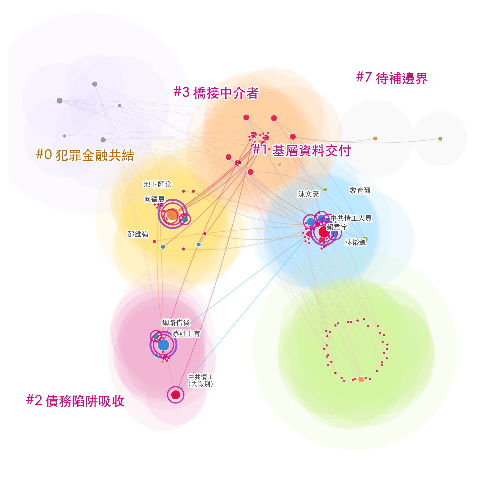
圖一：國軍遭滲透之債務、犯罪金融與資料外流共結圖譜
本文的主題是敵對勢力滲透國軍時，金錢、債務、通訊與犯罪金融基礎設施如何共同形成行動鏈。此圖改採 CiteSpace 式白底圖譜，以淡色雲團表示模式群集，以小紅點表示由邊表展開的事實節點，以少量關鍵標籤標示司法資料中最能支撐理論命題的節點。這樣畫的理由在於，本文真正要處理的是犯罪金融、債務脆弱性與資料外流如何共結，而不是把每個人物做成獨立 icon。閱讀本圖時，應先看群集之間是否由橋接節點相連，再回到來源資料確認每一條邊的成邊依據。
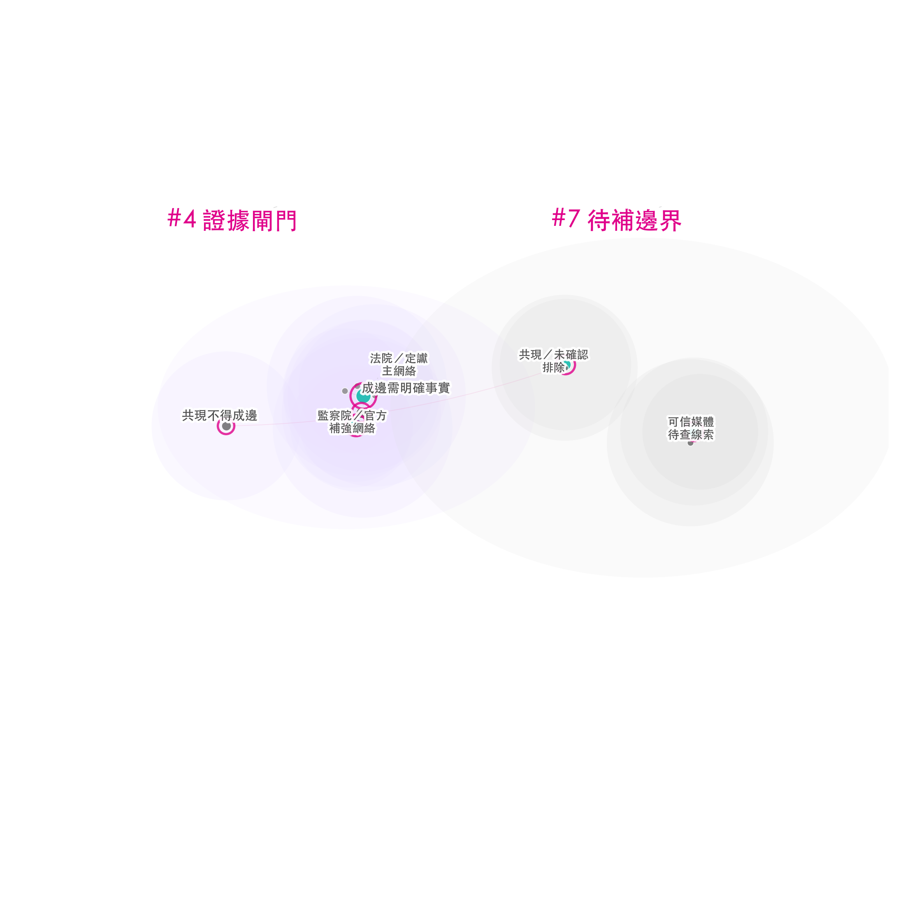
圖二：裁判書、官方資料與媒體資料之證據分級圖譜
本文的資料問題在於，國安案件容易混雜判決、官方資料與媒體線索。此圖將證據層級視覺化為一個閘門網絡，顯示 E3/E2 如何進入正式主網絡，E1/E0 如何被限制在背景、待查或排除位置。這樣畫的理由是避免共現誤判，讓讀者清楚知道本文的每條實證邊都必須通過明確事實描述，而不是由姓名或案名共現推導。
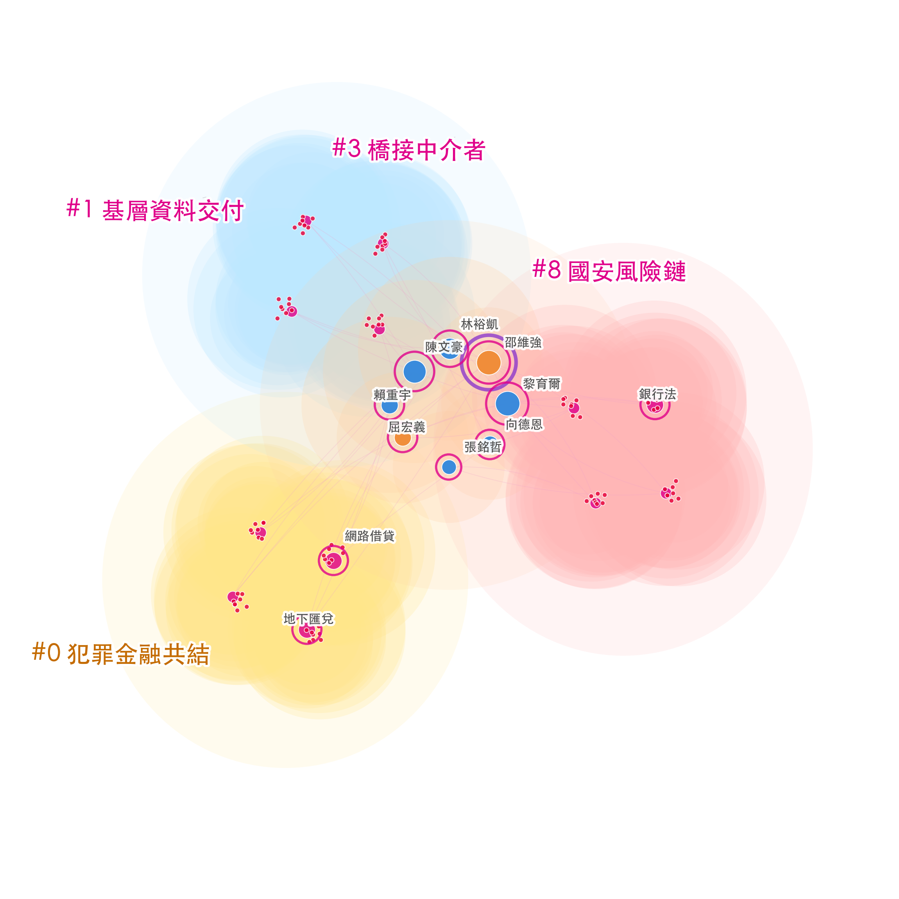
圖三：由指標人物到跨域犯罪基礎設施之滾雪球抽樣圖譜
本文採取判決書驅動的自我中心網絡擴張，而非全網掃描。此圖用三層抽樣圖譜說明研究如何從指標人物出發，追蹤直接關係、工具節點與案件類型交會。這樣畫的理由在於，自我中心擴張能控制樣本邊界，同時保留由人追物、由物追人的分析能力。閱讀本圖時，外圍類型節點代表研究程序，不代表所有外圍節點均已被司法確認為同一犯罪網絡。
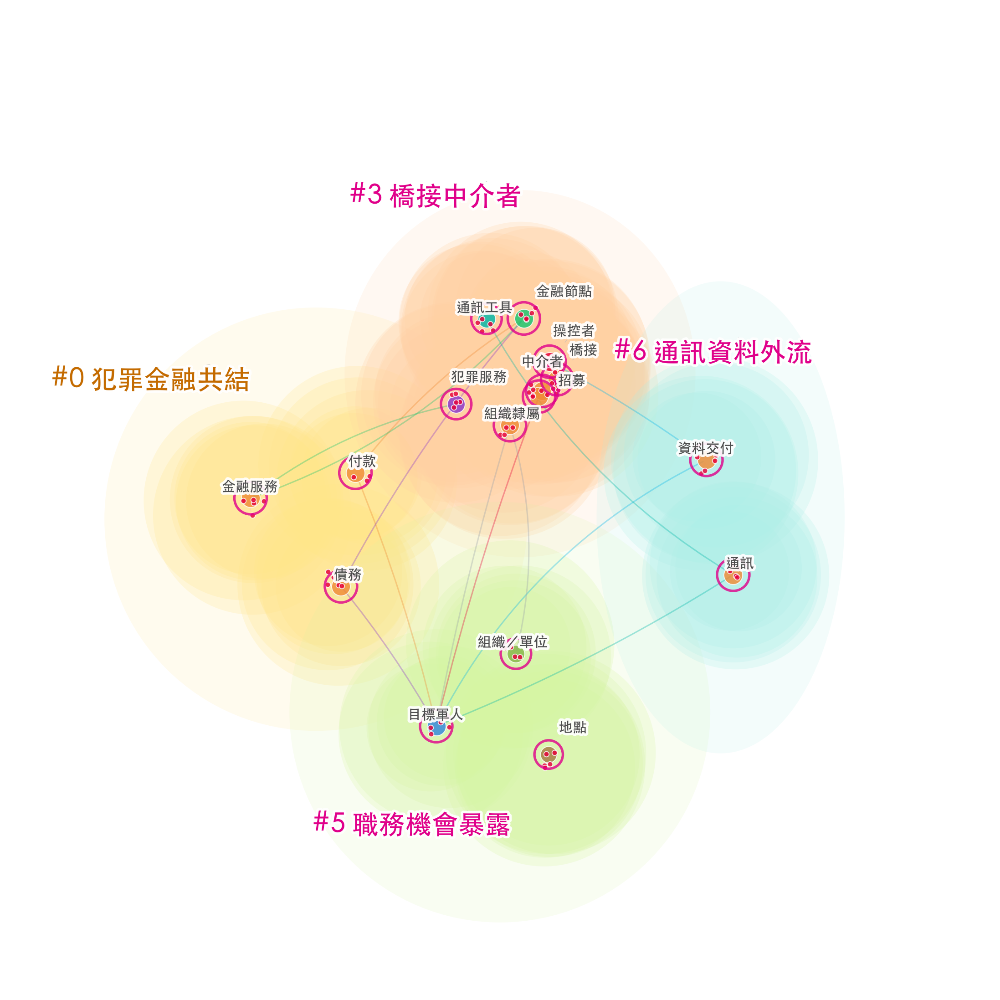
圖四：國軍滲透案件之多模節點與關係編碼圖譜
本文的編碼問題是人物、金流、通訊、組織與地點不能被壓成同一種節點。此圖以多模圖譜呈現節點類型與邊類型如何共同組成分析架構。這樣畫的理由在於，多模網絡可以分辨軍人、handler、broker、金融節點與通訊工具之間的不同功能，避免把同案共現誤讀成單一上下線關係。
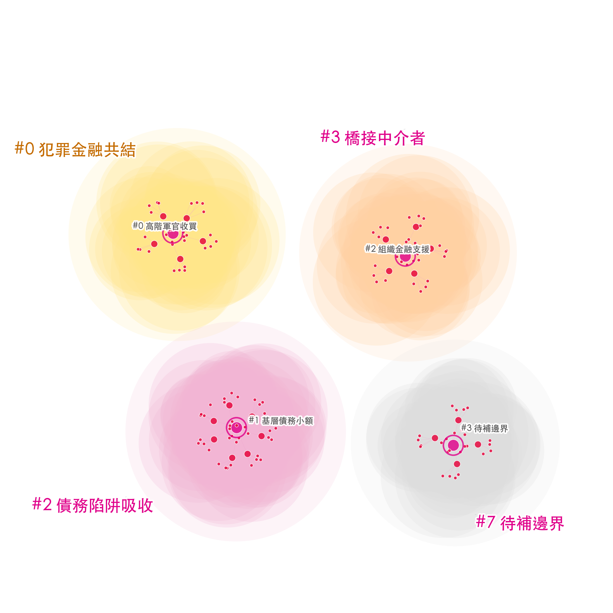
圖五：高階軍官、基層士官兵與外圍組織之滲透類型圖譜
本文的比較問題是高階軍官、基層士官兵與外圍組織是否呈現不同滲透型態。此圖以類型星座取代擁擠矩陣，將代表案例、入口、誘因、控制與風險放在同一視覺群集中。這樣畫的理由在於，類型比較應凸顯機制差異，而不是把文字塞進表格。閱讀本圖時，群集位置代表分析類型，不是刑責或嚴重程度排序。
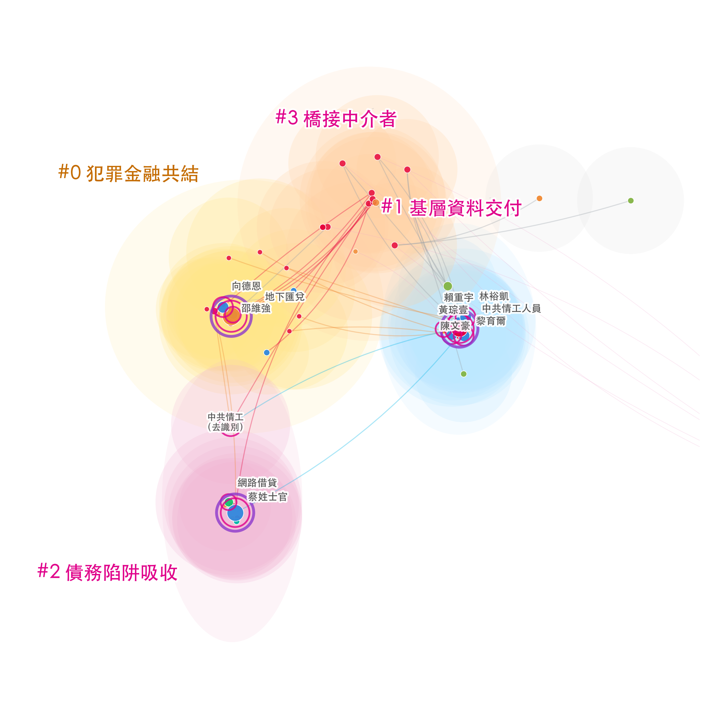
圖六：國軍滲透案件之招募、金流與資料交付三重流向圖
本文的核心實證問題是招募、付款、債務、金融服務、通訊與資料交付是否在同一行動鏈中形成共結。此圖使用正式 E3/E2 編碼資料，並以小型事實節點展開每一條邊，使讀者能看出金流、招募與資料交付如何透過中介節點相互連接。閱讀本圖時，線條顏色與群集位置是主要解讀重點，節點大小僅代表網絡顯示需要，不代表刑責。
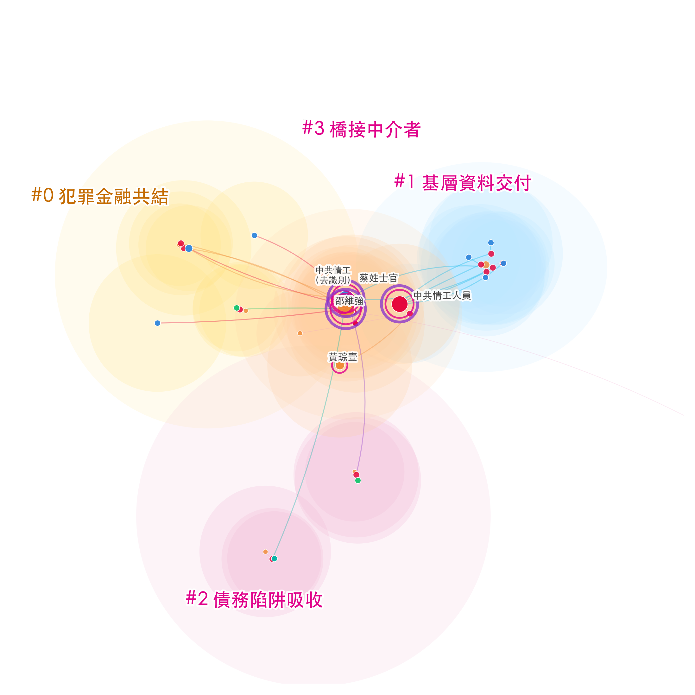
圖七：軍事滲透網絡中跨域中介者之橋接中心性圖譜
本文的 broker 問題是哪些節點位於軍人、外部情工、犯罪金融或通訊工具之間。此圖以 CiteSpace 式外圈呈現橋接節點，而不再使用簡報式長條圖。這樣畫的理由是 broker 的意義來自結構位置與跨域連接，而不是單一排序。閱讀本圖時，紫色外圈表示橋接位置，不能推論刑責高低、主謀地位或道德責任。
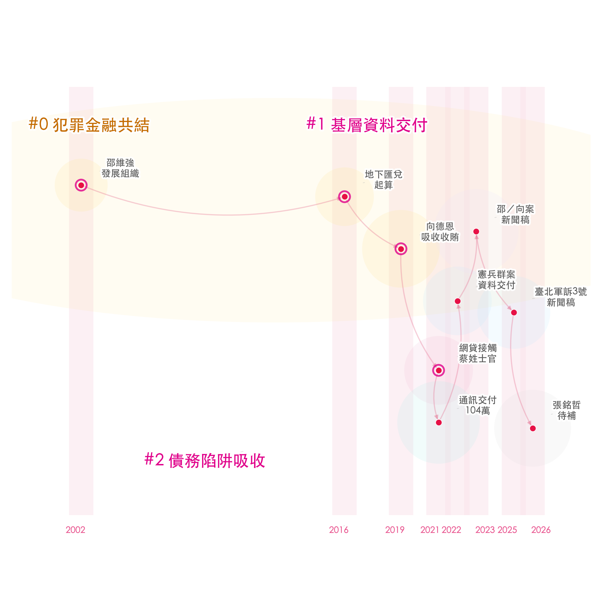
圖八：國軍滲透案件之接觸、付款、資料交付與判決時間序列
本文的時間問題是債務、接觸、付款、資料交付與司法確認之間的先後關係。此圖改採 CiteSpace timeline 的淡色時間切片形式，並縮小節點，避免大型泡泡遮蔽文字。這樣畫的理由在於，時間序列應協助判斷入口與後續行動之間的距離，而不是製造因果幻覺。閱讀本圖時，時間先後只能支持機制分析，不能單獨構成因果識別。
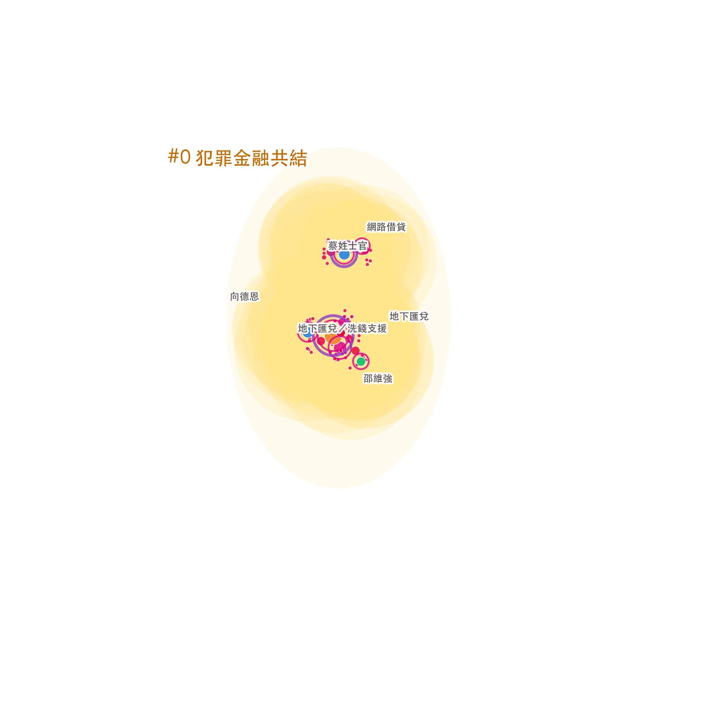
圖九：地下匯兌、付款與債務入口之犯罪金融支援模式圖
此圖新增犯罪金融模式，聚焦地下匯兌、付款與債務入口如何支撐滲透行動鏈。本文的目的不是直接宣稱所有案件都是洗錢案件，而是把邵維強案中已被司法資料記載的地下匯兌事實，與其他案件中的付款、債務與網貸入口放進同一理論框架。閱讀本圖時，應將其理解為犯罪金融基礎設施假設的視覺化。
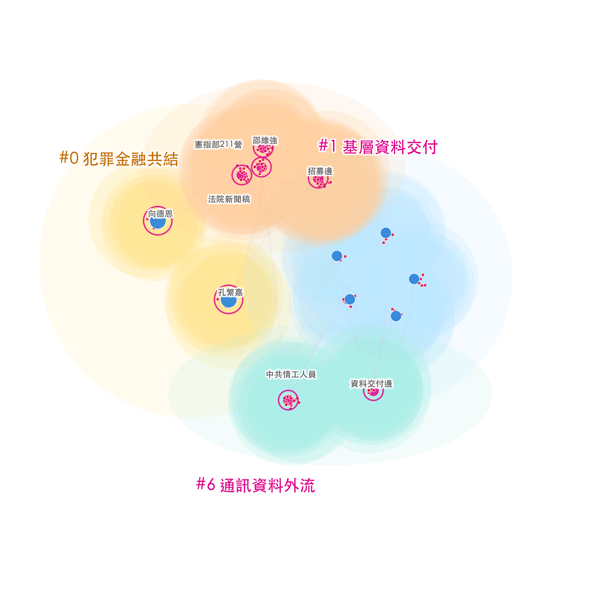
圖十：國軍滲透案件之共點與共橋模式圖
此圖新增共點模式，用來辨識多個 target 是否共享 handler、單位、關係類型或來源節點。本文的問題不是只看誰與誰直接相連，而是看哪些節點把不同個案或行動鏈綁在一起。這樣畫的理由在於，共點與共橋可協助發現潛在 broker 或制度破口；但共點本身不等於共謀，仍須回到來源資料確認成邊事實。
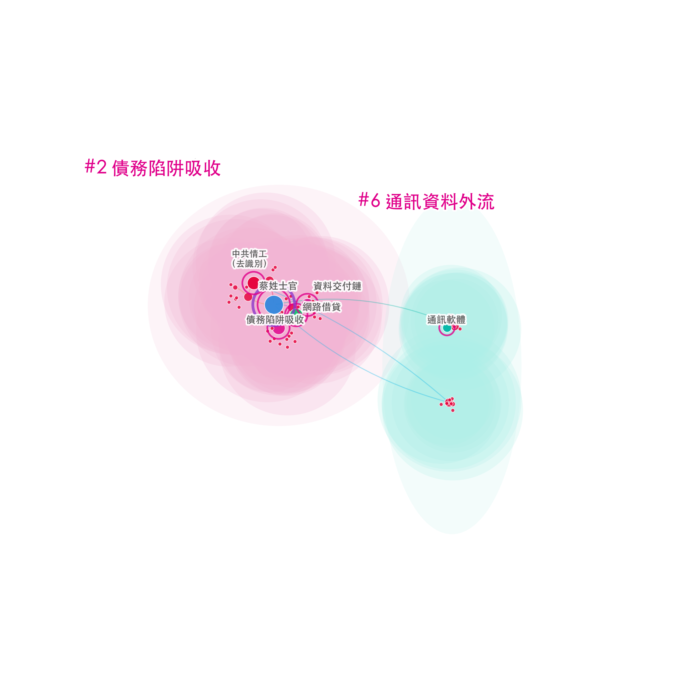
圖十一：基層軍人債務陷阱、通訊接觸與資料交付模式圖
此圖新增債務陷阱模式，聚焦基層軍人如何從財務壓力、網路借貸接觸、情工利誘、通訊工具到資料交付形成行動序列。這樣畫的理由在於，債務不是背景敘事，而是可能把目標節點接上外部滲透鏈的入口機制。閱讀本圖時，去識別化節點不得被任意還原。
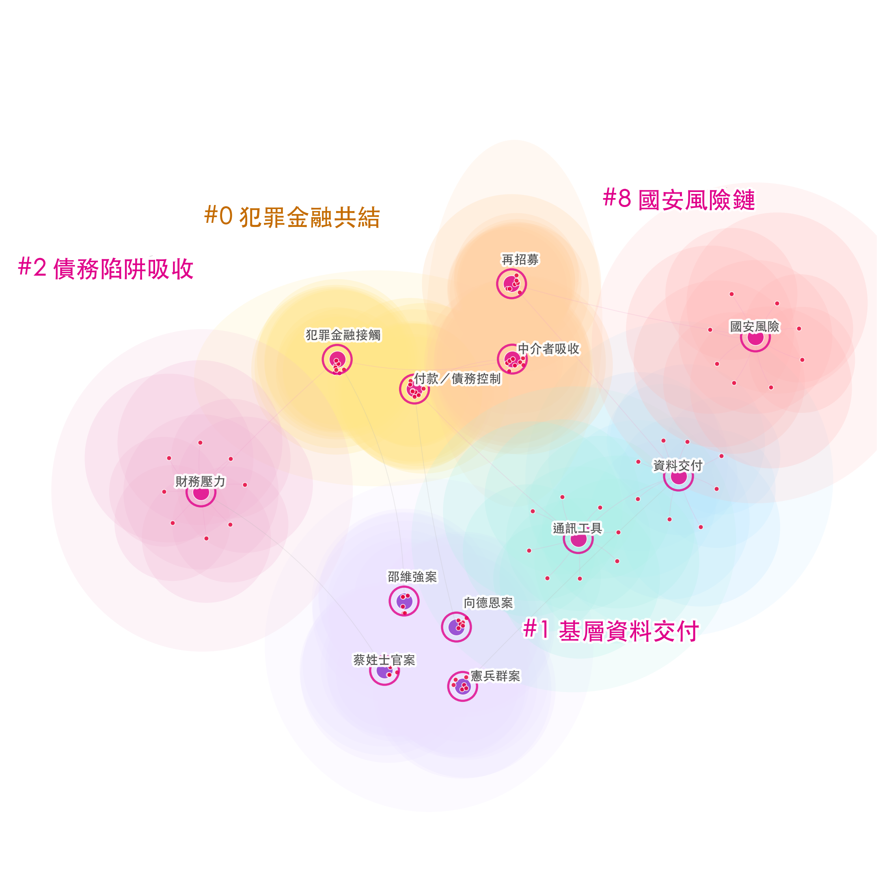
圖十二：債務、犯罪金融、資料外流與國家安全風險鏈模式圖
此圖新增國安風險鏈模式，把前述模式整合為財務脆弱性、犯罪金融接觸、中介者吸收、付款或債務控制、通訊工具、資料交付、再招募與國安風險。這樣畫的理由在於，本文最終要回答的是犯罪服務供應鏈如何被敵對勢力借用，而非只描述個案。閱讀本圖時，應將它視為理論整合圖與後續檢驗命題，不是單一個案的因果結論。